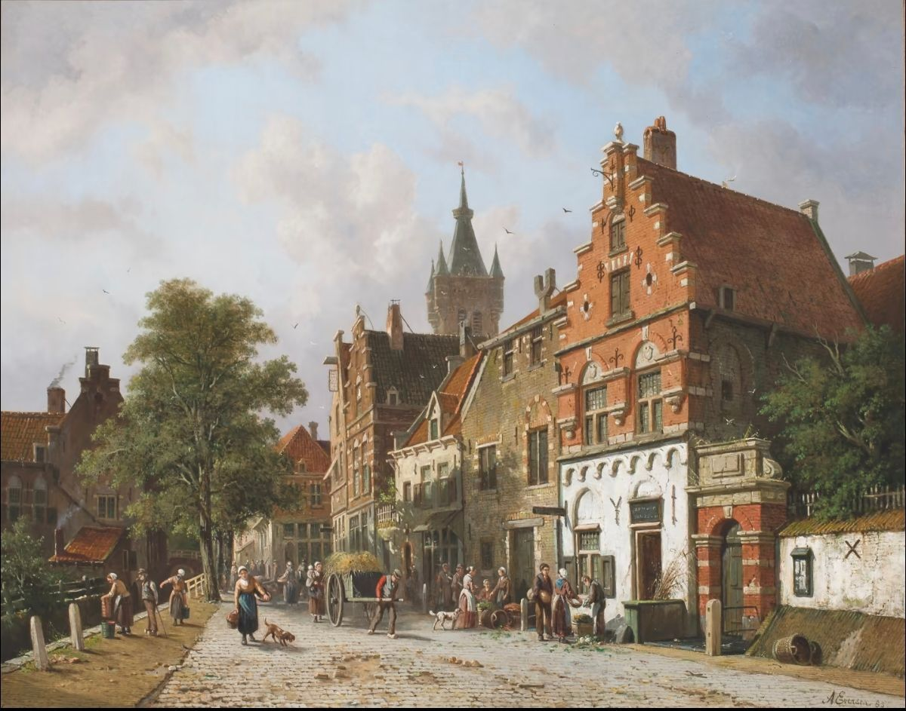
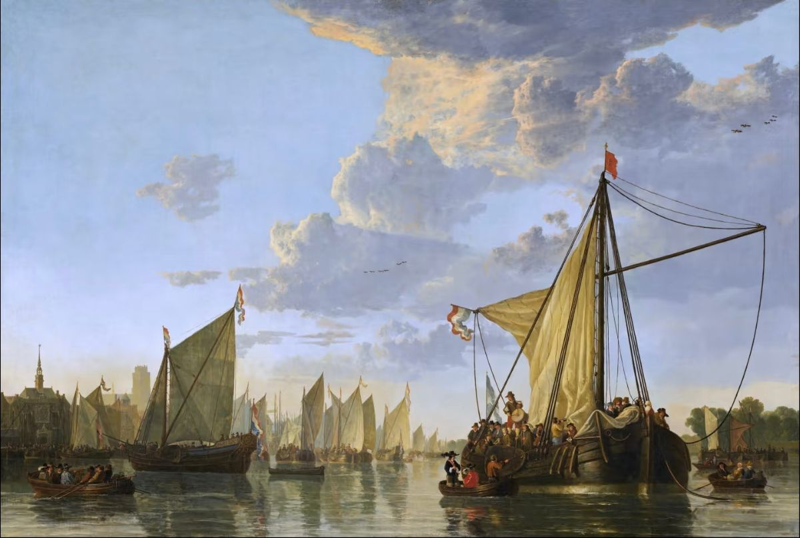

尼德兰联合王国
尼德兰联合王国，向世界敞开门户。
我们位于欧洲西北的低地之滨，我们深知，这片土地从海洋中争得，靠的不是刀剑，而是堤坝、商船和勤劳的双手。
我们的立场：绝对的中立，不介入大国纷争，只做和平贸易的桥梁。
这一承诺，让我们的港口成为各国货物自由流转的枢纽，也让我们的城市成为思想与资本交汇的安全港。
我们的重心：发展经济，重建繁荣。从阿姆斯特丹到卢森堡，运河正在疏浚，工厂正在兴建，世界各地的物产等待更好的流通。
我们急需——
· 能够在遭受外国侵略时进行反击的士兵
· 精于写作，会开办报刊的作家
· 通晓建筑的建筑师
· 懂得红石科技的工程师与工匠
· 以及愿意在农垦、造船、纺织业中踏实耕耘的所有能人
在这里，不问出身，只问才干；不靠征服，只靠经营。
联合王国给予你稳定的法律、宽容的信仰环境和合理的税制，而你给予我们的，将是共同繁荣的每一天。
来阿姆斯特丹或布鲁塞尔，登记你的姓名和技艺。
低地虽低，志向不低；国土虽小，市场无尽。我们等你。

